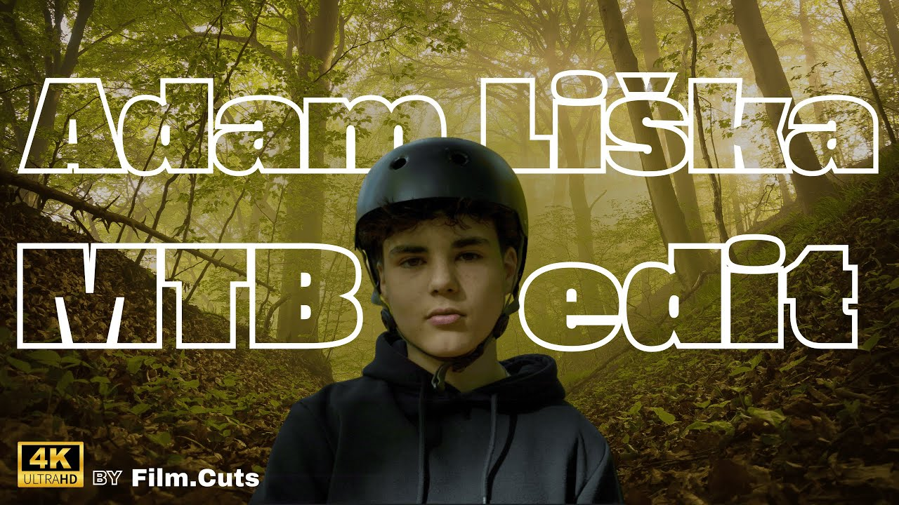

Adam Liška Bike Edit [4K]
O projektu
Krátký film pro značku, který pracuje s kontrastem ticha a napětí. Vysoká kvalita 4K záberu s detailním zvukovým designem vytváří intenzivní a emotivní zážitek.

Fotografie
Nahraďte soubory v assets/: project4-photo1.png, project4-photo2.png, project4-photo3.png, project4-photo4.png